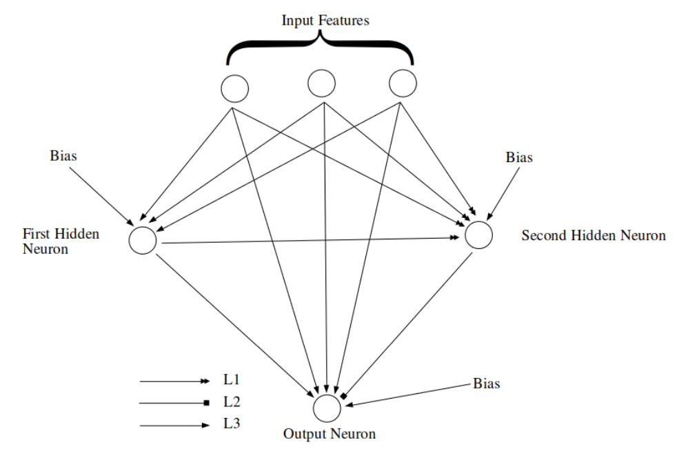

Click on the project to learn more about it
In this project, a modified version of Casper network [1] were implemented, which is a modified Cascade correlation network, to then compare the classification of both within-subject and cross-subject settings to previously published result. The NN was trained to perform classification for the UCI EEG dataset for alcoholism, which contains the EEG data of control subjects and subjects that is diagnosed with alcoholism. The modified Casper network performs relatively well when it comes to within-subject settings with mean accuracy of 88%, but failed to produce outstanding result in cross-subject settings, with mean accuracy of 64.2%.
Figure 1: Topology of the modified CasPer Algorithm [1] after adding the second neuron
This project was done as a University research project. Started as an individual semester long project, later continued the research project under the supervision of Mr. Yue Yao (ANU School of Computer Science), modifications were made to my original paper and submitted to conference.
Method: modified CasPer [1]
Dataset: UCI EEG Alcoholism dataset [2], two different preprocessed version of the dataset were used in the code, both preprocessed by Yao, Plested and Gedeon [3-4].
The Casper algorithm is implemented base on some sample code provided by Australian National University, algorithm/codes including normalization, plotting loss diagram and plotting error matrix and printing epoch/loss and accuracy are based on the University's course material. Some codes are provided UCI originally serve as an example for the classification of the glass dataset url: http://archive.ics.uci.edu/ml/datasets/Glass+Identification
The implementation of the Autoencoder was directly copied from Implementing an Autoencoder in PyTorch, with minor changes.
[1] N. K. Treadgold and T. D. Gedeon, "A cascade network algorithm employing progressive RPROP," in Biological and Artificial Computation: From Neuroscience to TechnologyAnonymous Berlin, Heidelberg: Springer Berlin Heidelberg, 2005, pp. 733-742.
[2] EEG Database Data Set. UCI Machine Learning Repository [http://archive.ics.uci.edu/ml]. Irvine, CA: University of California, School of Information and Computer Science. [Online], Available: https://archive.ics.uci.edu/ml/datasets/eeg+database, October 13, 1999.
[3] Y. Yao, J. Plested and T. Gedeon, "Deep feature learning and visualization for EEG recording using autoencoders," in Neural Information ProcessingAnonymous Cham: Springer International Publishing, 2018, pp. 554-566.
[4] Y. Yao, J. Plested and T. Gedeon, "Information-preserving feature filter for short-term EEG signals," Neurocomputing (Amsterdam), vol. 408, pp. 91-99, 2020.